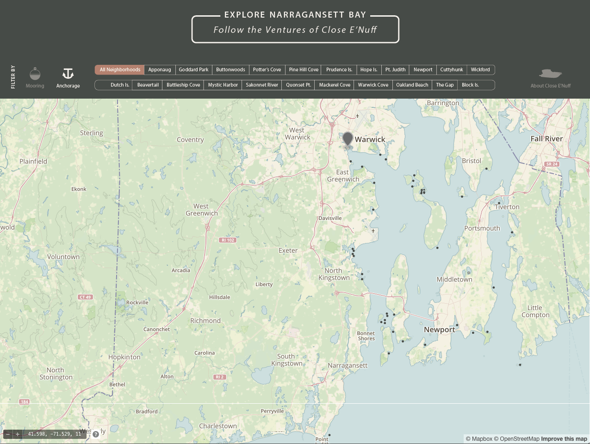
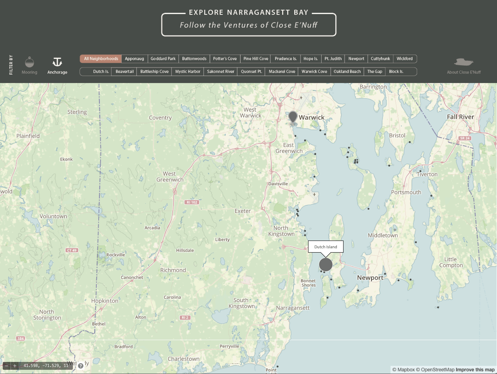
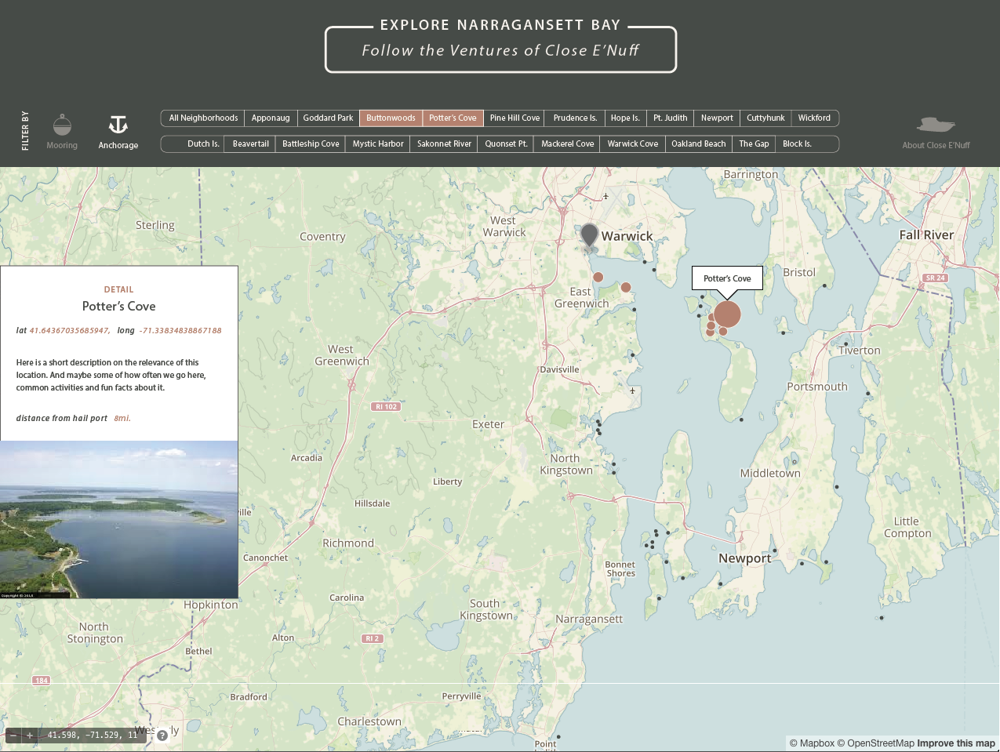

Home View Filter Moorings v. Anchorages, and view top locations for Recreational Boating in Narragansett Bay.
Hover Data Reveal Neighborhood of the data point.
Detail View On selecting individual neighborhoods, the data points in that location increase and highlight on the map. When an individual point is selected, a detail card enters on left side of the window.
